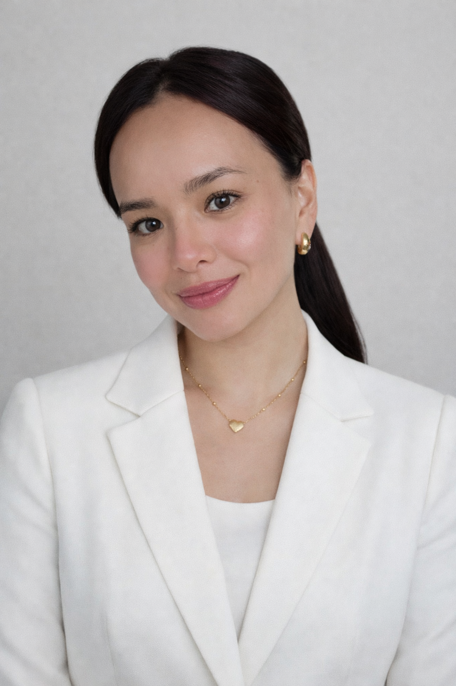

Client Service Manager & Program Coordinator
"I believe every person deserves more than access to services — they deserve to be seen, heard, and supported in a way that honours their dignity and potential."

About Me
I'm a Client Service Manager and Program Coordinator working with an NDIS registered provider in Australia. My role is to make sure that people living with disability can genuinely access the supports they're entitled to — not just on paper, but in practice, in their lives, on their terms.
My path here wasn't linear. I trained and worked as a doctor in the Philippines, where I learned early that illness is rarely just a clinical problem. Poverty, geography, and structural neglect show up in the body. That understanding never left me. It followed me into public health, and it guides every conversation I have with the participants I support today.
I care deeply about closing the gap between what people need and what they can actually get. That has been the constant in every role I've held — and it's what gets me to work every morning.
What I Stand For
What I Do
As a service manager within the NDIS framework, my work sits at the intersection of clinical knowledge, system navigation, and genuine human connection. I bring a public health perspective to a field that deeply needs it — asking not just "how do we deliver this service?" but "is this service actually reaching people, and is it making a real difference in their lives?"
I coordinate supports for NDIS participants, helping them navigate their plans, connect with providers, and build the services they need to pursue their goals — not just tick boxes.
I work with participants who face barriers — language, literacy, cultural, systemic — to make sure the NDIS works for them, not just for people who already know how to navigate it.
My background in medicine means I understand complex health needs, can liaise effectively with clinical teams, and bring a whole-person view to disability support planning.
From practicing medicine in the Philippines to public health advocacy to disability services in Australia — the story of how I got here, and why it all connects.
Read My Journey →My Background
I trained as a physician in the Philippines, where I learned to practise medicine in a system of genuine scarcity. It taught me to look beyond the presenting complaint — to see the housing situation, the income, the geography, the community.
That lens stayed with me when I transitioned into public health, where I could finally act on the root causes I'd spent years observing. Why do people get sick? Why can't they access care when they do? These questions drove me to understand health as a justice issue, not just a biological one.
When I migrated to Australia with my family, I brought all of that with me. I've learned a new system — the NDIS, disability rights law, Australian health and welfare structures — and I bring my clinical and public health background to everything I do within it.
Connect
Whether you're a participant, a provider, a fellow advocate, or someone who shares a belief that people deserve better from the systems meant to support them — I'd love to connect.